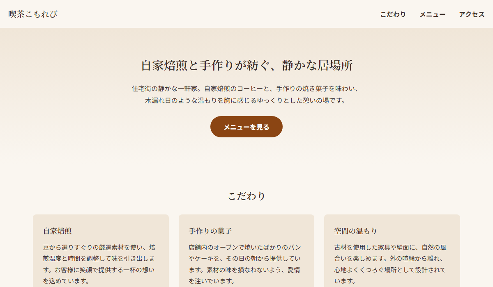
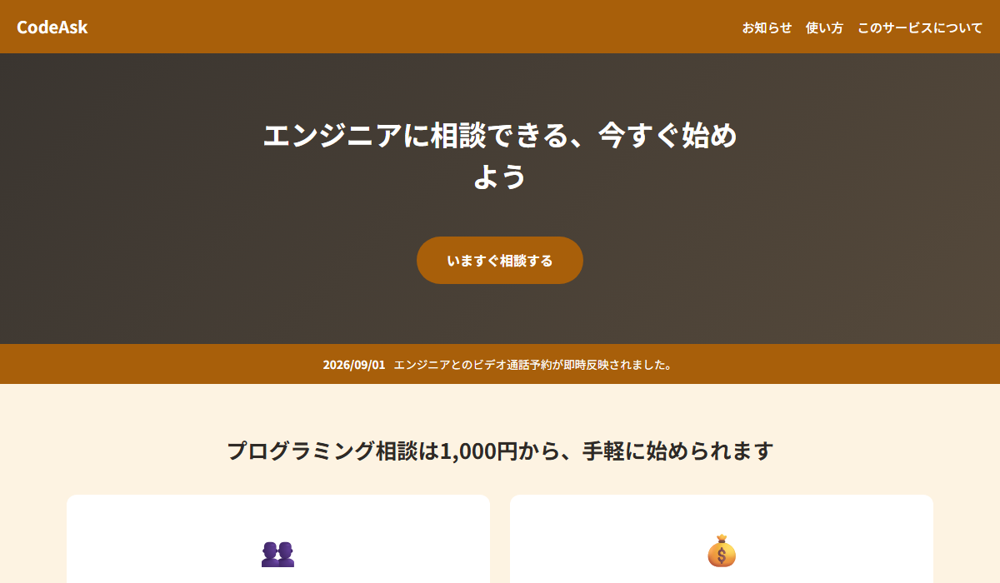

Coding Portfolio
HTML / CSS / JavaScriptのコーディングを担当しています。デザインカンプをもとに、スマホからPCまで崩れずに表示されるページを作ります。自動テストとHTMLの文法チェックを通してから納品します。

架空のカフェのLP。文章の下書きからコーディングまで一通り担当しました。

公開されているデザインカンプを見て、レイアウト通りに再現制作しました。